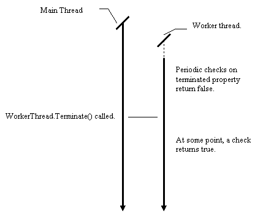
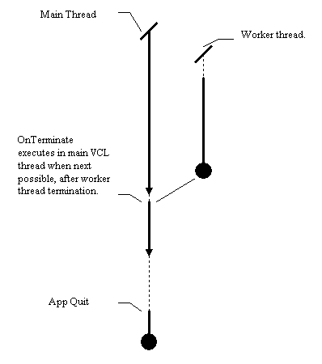

Chapter 4. Simple thread destruction.
In this chapter:
Issues with
thread completion, termination and destruction.
Back in Chapter 2, an outline was given of some of the problems inherent
in thread termination. There are two main issues:
-
Exiting the thread cleanly, and clearing up the resources allocated.
-
Obtaining results from the thread when it has finished.
These points are closely interrelated. If a thread does not have to communicate
any information back to the main VCL thread when it has finished, or if
one uses the techniques described in the previous chapter to communicate
results just before the thread object terminates, then there is no need
for the main VCL thread to participate in any thread clean-up. In these
cases, one can set FreeOnTerminate to true for the thread, and let the
thread perform its own memory deallocation. Remember that if one does this,
the user can force quit the program, resulting in termination of all the
threads in it, with possibly unforeseen consequences. If the thread only
writes to memory, or communicates with other parts of the application,
then this is not a problem. If it writes to a file or a shared system resource,
then this is not acceptable.
If a thread has to exchange information with the VCL after termination,
then a mechanism has to be found for synchronizing the VCL thread with
a worker thread, and the main VCL thread has to perform the cleanup (you
have to write code to free the thread). Two mechanisms will be outlined
later.
There is one more point to be borne in mind:
-
Terminating a thread before its course of execution has run to completion.
This may actually occur quite often. Some threads, especially those that
process I/O, execute in a permanent loop: the program might always receive
more data, and the thread always has to be prepared to process it until
the program terminates.
So, addressing these points in reverse order...
Premature thread termination.
In some situations, one thread may need to notify another thread that it
should terminate. This commonly occurs if a thread is executing a lengthy
operation, and the user decides to quit the application, or the operation
must be aborted. TThread provides a simple mechanism to support this in
the form of the Terminate method, and the Terminated property.
When a thread is created, its terminated property is set to false. Whenever
a thread's terminate method is called, the terminated property for that
thread is set to true. It is thus the responsibility of all threads to
periodically check whether they they have been terminated, and if they
have, to gracefully quit execution. Note that no large scale synchronization
happens around this process; When one thread sets the terminated property
of another, it cannot assume that the other thread has read the value of
its terminated property and started termination. The Terminated property
is simply a flag, saying "please quit as soon as possible". The diagram
below illustrates this situation.

When designing thread objects, some thought has to be given to reading
the terminated property when required. If your thread blocks, as a result
of any of the synchronization mechanisms discussed later, you may have
to override the terminate method to unblock your thread. In particular,
you will remember to have to call the inherited terminate method before
unblocking your thread if you want the next test for terminate to return
true. More on this anon. As an example, here
is a small modification to the prime number calculation thread of the
previous chapter to ensure that it checks for the terminated property.
I have assumed that it is acceptable for the thread to return an incorrect
result when the terminated property is set.
The OnTerminate Event.
The OnTerminate event occurs when a thread has truly finished execution.
It does not happen when terminate method of a thread is called.
This event is potentially quite useful, in that it is executed in the context
of the main VCL thread, just like methods passed to synchronize. Thus,
if one wishes to perform some VCL operations with a thread that automatically
frees itself upon termination, then this is the place to do it. Most programmers
new to threads will find this to be the most useful way of getting a non
VCL thread to transfer its data back to the VCL, with a minimum of fuss,
and without requiring any explicit synchronization calls.

As you can see from the diagram above, OnTerminate works in much the same
way as Synchronize, and it is almost identical in semantics to putting
a call to Synchronize at the end of a thread. The main use for this is
that by using a flag, such as "AppCanQuit" or a reference count of running
threads, in the main VCL thread, a simple mechanisms can be provided to
ensure that the main VCL thread exits only when all other threads have
quit. There are synchronization subtleties involved here, especially if
a programmer were to put a call to Application.Terminate into the OnTerminate
event of a thread, but these will be dealt with later.
Controlled Thread
Termination - Approach 1.
In this example we will take the prime number program code in Chapter 3,
and modify it so that the user cannot inadvertently close the application
when worker threads are executing. This turns out to be simple. In fact,
we need not modify the thread code at all. We simply add a reference count
field to the main form, increment it when creating threads, set the OnTerminate
event of the threads to point to a handler in the main form which decrements
the reference count, and when the user requests that the application be
closed, we raise a warning dialog box if necessary.
The
example shows how simple this approach is: all the code concerned with
keeping track of the number of threads in execution all occurs in the main
VCL thread, and the code is essentially event driven, just like any other
Delphi application. In the next chapter we will consider a potentially
more complicated approach, which has benefits when using more advanced
synchronization mechanisms.
[Contents] [Previous][Next]
© Martin Harvey
2000.